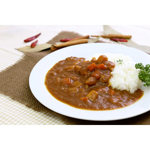

カレーライスの作り方
美味しいカレーライスを作りましょう

下準備
- タマネギを薄切りする
- じゃがいもは一口大に切り、水にさらす
- にんじんは一口大に切る
- 鶏肉、牛肉などを食べやすい大きさに切る
- その他、使用する野菜があれば適宜、食べやすい大きさに切る
調理
- 鍋にタマネギを入れ、中火で焦げ付かないように茶色くなるまで炒める
- 肉を利絵手軽く焦げ目がつくくらいに炒める
- にんじんを入れ、分量の水を入れて強火で煮る
- 灰汁が浮いてきたら丁寧にすくい、沸騰したら火を弱める
- 10分くらい経ったころにじゃがいもを入れ、さらに10分くらい煮る
- カレーのルーを入れて、強火で5分～10分、とろみがつくまで煮込む
- 皿にごはんをよそい、カレーをかけてできあがり